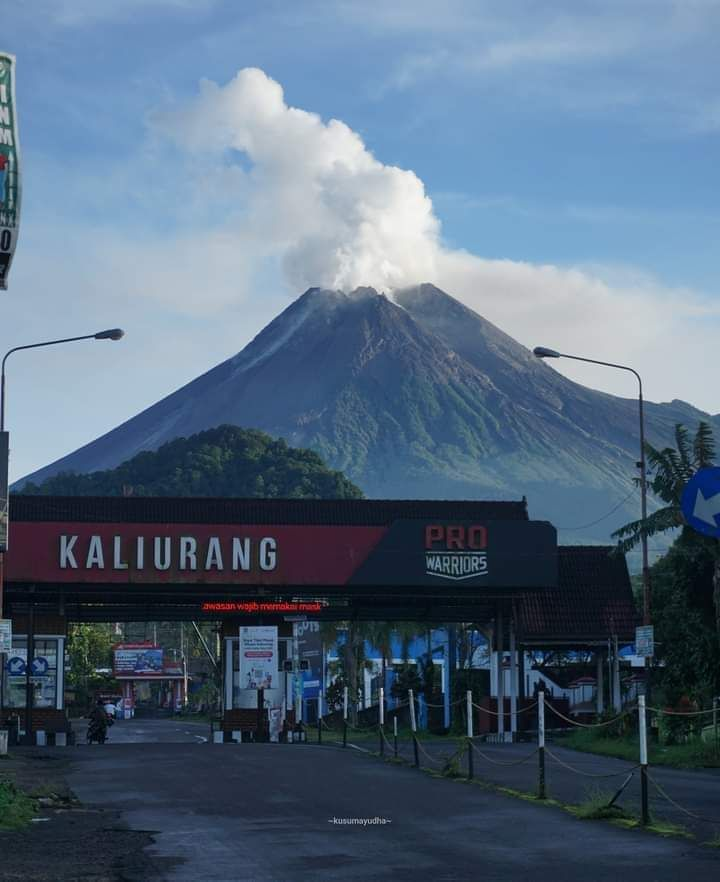
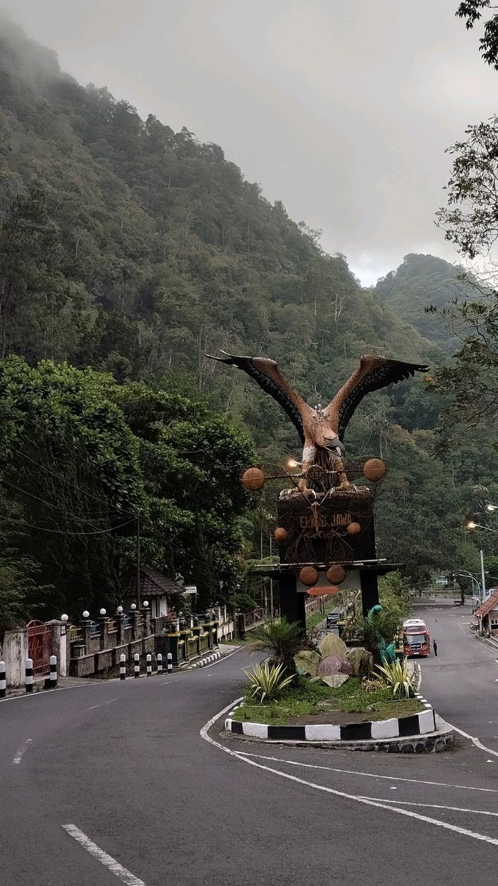
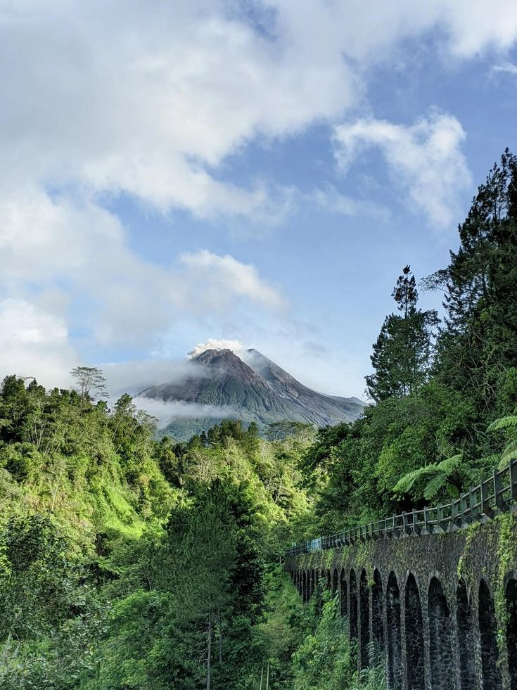
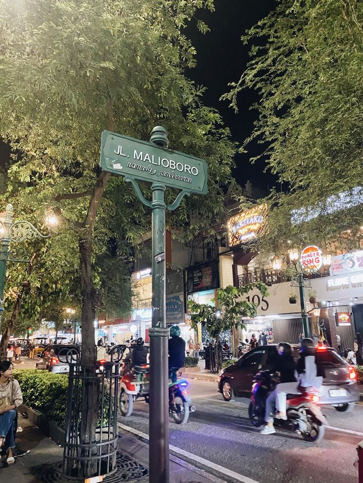
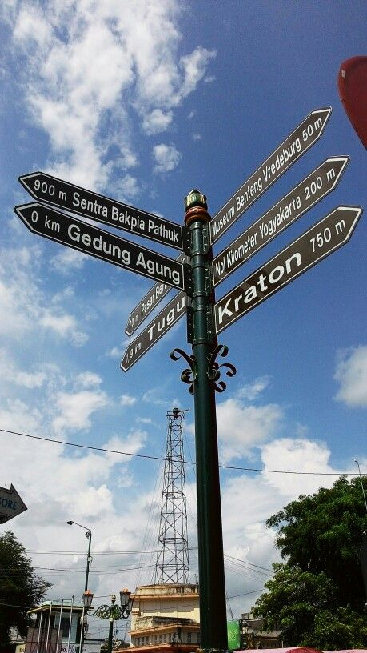
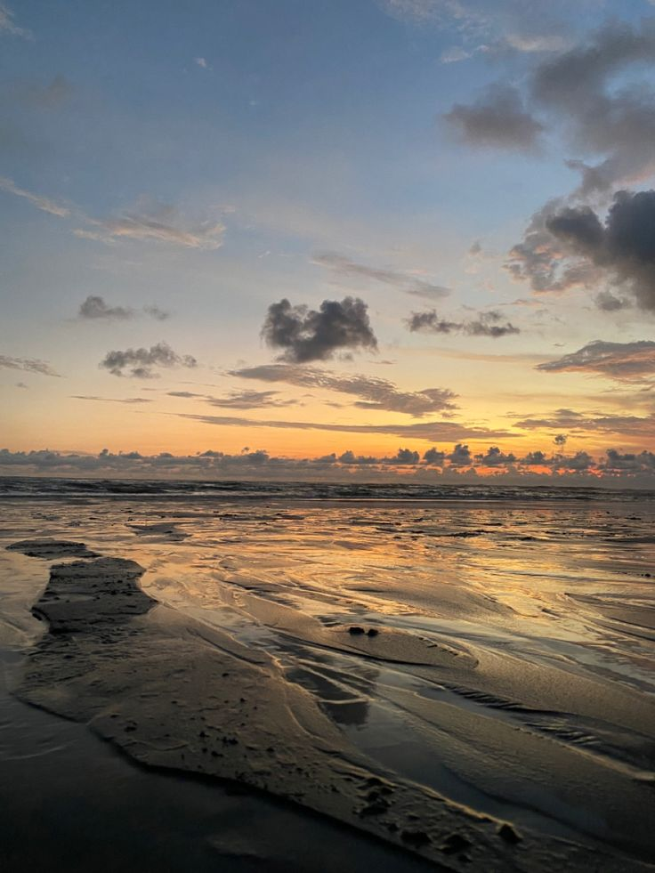
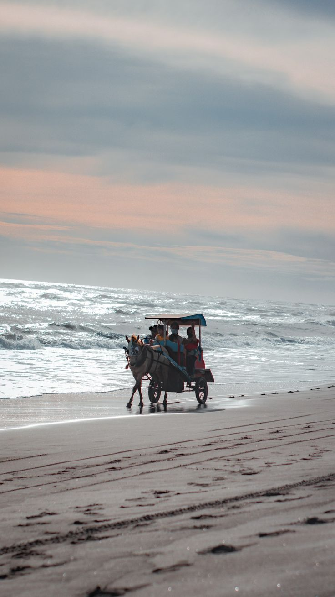

Kaliurang



Kaliurang adalah destinasi wisata alam yang terletak di Kabupaten Sleman, Yogyakarta. Tempat ini dikenal dengan pemandangan alam yang indah, termasuk tebing karst, hutan, dan sungai. Wisatawan dapat menikmati berbagai aktivitas seperti hiking, paralayang, dan menikmati keindahan alam yang belum terjamah.
Malioboro



Malioboro adalah salah satu daerah pusat perbelanjaan dan kuliner di Yogyakarta. Tempat ini dikenal dengan keragaman kuliner lokal, toko-toko souvenir, dan suasana kota yang hidup. Wisatawan dapat menikmati berbagai makanan tradisional Indonesia, berbelanja di pasar tradisional, atau menikmati pertunjukan seni budaya lokal.
Pantai Parangtritis



Pantai Parangtritis adalah salah satu pantai terkenal di Yogyakarta yang terletak di Kabupaten Bantul. Pantai ini dikenal dengan pasir hitamnya yang unik dan ombak yang kuat. Wisatawan dapat menikmati pemandangan matahari terbenam yang spektakuler, bermain layang-layang, atau menjelajahi gua-gua di sekitar pantai.